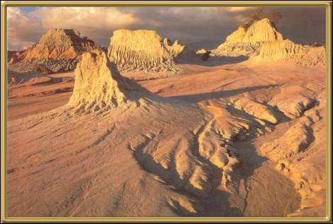

Photographer: Unknown
Now a World Heritage Listed National Park, Lake Mungo is a dried-up lake. The shores of the old lake contain some fascinating archaeological finds, particularly a continuous record of Aboriginal life dating back to approximately 40,000 years or more. It's also a good place for a camping trip.